| 12 May. 2023 |
「ゼロから作るDeep Learning」の勉強会を開始しました。 
|
| 4 May. 2023 |
機械学習コンペ初心者を対象に、ハンズオンを行いました。SIGNATEの練習問題「お弁当の需要予測」を題材に、コンペの全体的な流れや精度を上げるテクニックを解説しました。 |
| 27 Apr. 2023 |
「統計的因果推論の理論と実装」の勉強会を開始しました。 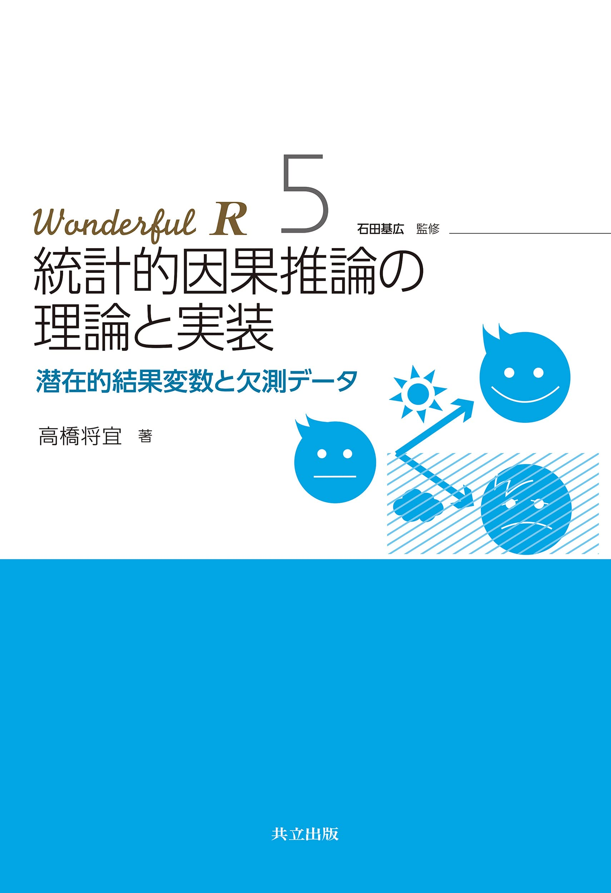 |
| 9 Mar. 2023 |
「第1回AIハッカソン」の発表会を実施しました。5人の開発者が各々自由なテーマでAIを制作しました。 |
| 12 Jan. 2023 |
「ゼロから作るDeep Learning 4」を読了しました。 |
| 2 Dec. 2022 |
「ガウス過程と機械学習」を読了しました。 |
| 13 Oct. 2022 |
「ゼロから作るDeep Learning 4」の勉強会を開始しました。 
|
| 5 Oct. 2022 |
「ガウス過程と機械学習」の勉強会を開始しました。 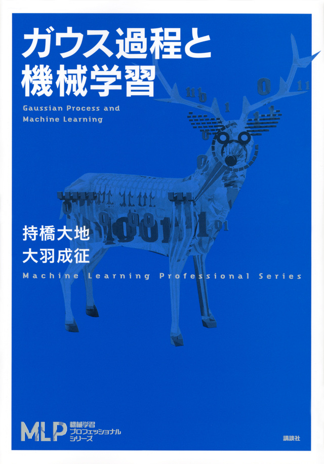 |
| 5 Sep. 2022 |
株式会社スクラムサイン様とスポンサー契約を締結しました。 |
| 1 Sep. 2022 |
「しっかり学ぶ数理最適化」の勉強会を開始しました。 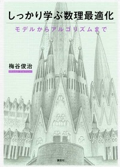 |
| 27 Aug. 2022 |
Transformer/ViT/gMLP/PoolFormer論文読み会を行いました。 |
| 30 Jun. 2022 |
「ゼロから作るDeep Learning」を読了しました。 |
| 20 Apr. 2022 |
「ゼロから作るDeep Learning」「深層学習 改訂2版」の輪読を開始しました。 
|
| 20 Jan. 2022 |
「はじめてのパターン認識」を読了しました。 |
| 17 Nov. 2021 |
論文読み会を開始しました。 |
| 7 Oct. 2021 |
「はじめてのパターン認識」の輪読を開始しました。 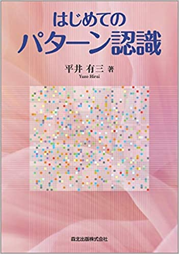 |
| 25 Aug. 2021 |
「Kaggleコンペティション チャレンジブック」を読了しました。 |
| 6 Jul. 2021 |
「パターン認識と機械学習 上」を4章前半(4.1節)まで読了し、一度輪読会を中止しました。 |
| 24 Jun. 2021 |
「つくりながら学ぶ!深層強化学習 Pytorchによる実践プログラミング」を読了しました。 |
| 12 May. 2021 |
「Kaggleコンペティション チャレンジブック」の輪読を開始しました。 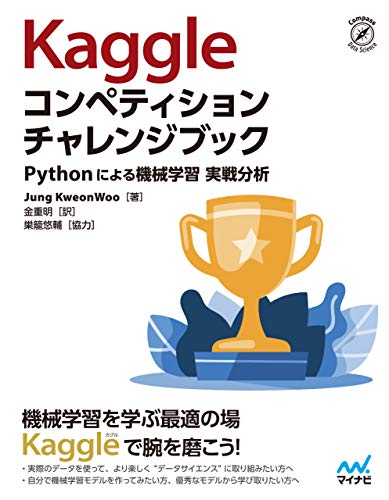 |
| 6 May. 2021 |
「つくりながら学ぶ!深層強化学習 Pytorchによる実践プログラミング」の輪読と、新入生向けに「ゼロから作るDeepLearning」の輪読を開始しました。 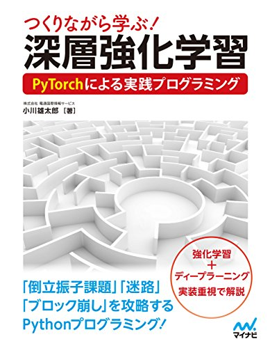 |
| 4 May. 2021 |
「パターン認識と機械学習 上」の輪読を開始しました。 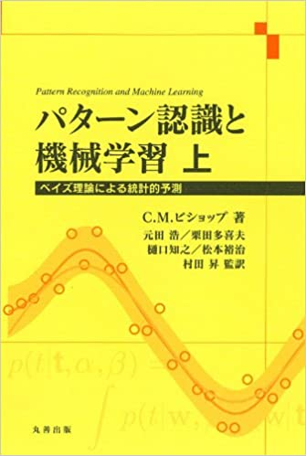 |
| 7 Jan. 2021 |
「生成 Deep Learning --絵を描き、物語や音楽を作り、ゲームをプレイする」を読了しました。 |
| 5 Nov. 2020 |
「生成 Deep Learning --絵を描き、物語や音楽を作り、ゲームをプレイする」の輪読を開始しました。 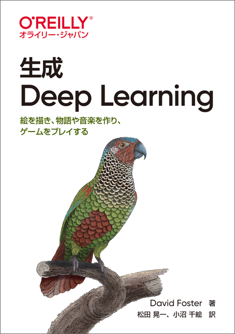 |
| 22 Oct. 2020 |
「作りながら学ぶ! PyTorchによる発展ディープラーニンング」を読了しました。 |
| 7 May. 2020 |
「つくりながら学ぶ! PyTorchによる発展ディープラーニンング」の輪読会と新入生向け輪読会を開始しました。 新型コロナウイルス感染症による影響を考慮し、2020年度の活動は新入生歓迎会を含み、全てオンラインで行いました。 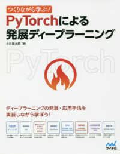 |
| 16 Jan. 2020 |
「ゼロから作るDeep Learning ②」の輪読会を終了しました。 |
| 23-24 Nov. 2019 |
京都大学の11月祭に出展しました。 |
| 3 Oct. 2019 |
「ゼロから作るDeep Learning ②」の輪読会とフリー枠形式の発表を開始しました。 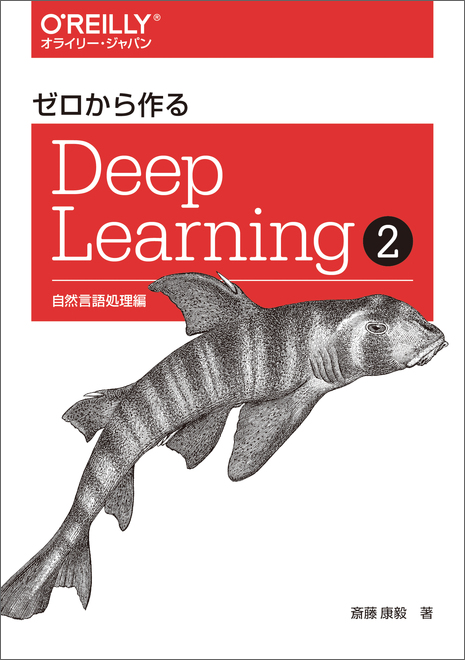 |
| 11 Jul. 2019 |
「Pythonで学ぶ強化学習 入門から実践まで」を読了しました。 |
| 25 Apr. 2019 |
「Pythonで学ぶ強化学習 入門から実践まで」の輪読会と新入生向け輪読会を開始しました。 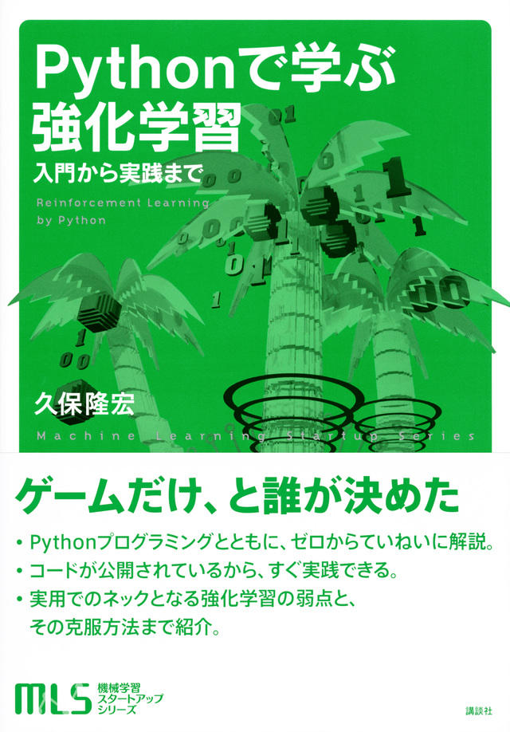 |
| 17 May. 2018 |
新入生歓迎会を開催しました。 |
| 1 Feb. 2018 |
種石先生がNVIDIA社のDLI University Ambassadorに選ばれました。 |
| 8 Dec. 2017 |
「DeepLearning（日本語版）」の輪読を開始しました。 
|
| 30 Nov. 2017 |
「詳解ディープラーニング」を読破しました。 |
| 23-26 Nov. 2017 |
京都大学の11月祭に出展しました。 

|
| 6 Jul. 2017 |
「詳解ディープラーニング」の輪読を開始しました。 
|
| 29 Jun. 2017 |
「ゼロから作るDeepLearning」を読破しました。 |
| 20 Apr. 2017 |
「ゼロから作るDeepLearning」の輪読を開始しました。
|
| 10 Apr. 2017 |
新歓説明会を実施しました。 宣伝の甲斐があってか、この週でメンバーが30名を突破しました。 |
| 4 Apr. 2017 |
新入生を相手に、初めてビラまきをしました。 同時にツイッターでKaiRAの宣伝に努めました。 |
| 16 Mar. 2017 |
KaiRAを設立しました。 学生メンバーが1人しか居なかったので、ビラ作成などにとりかかりました。 |